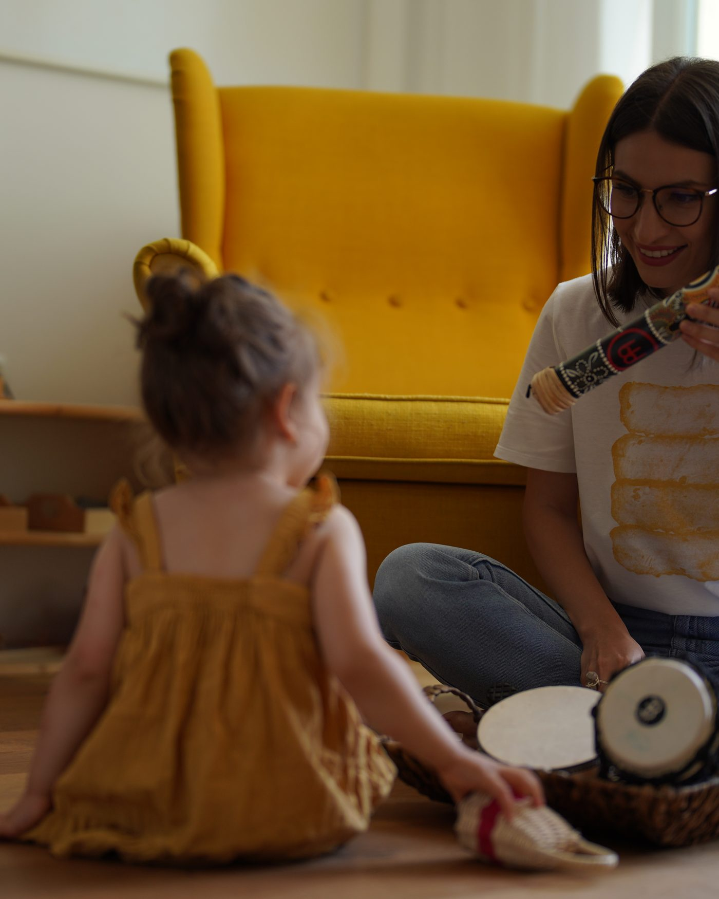
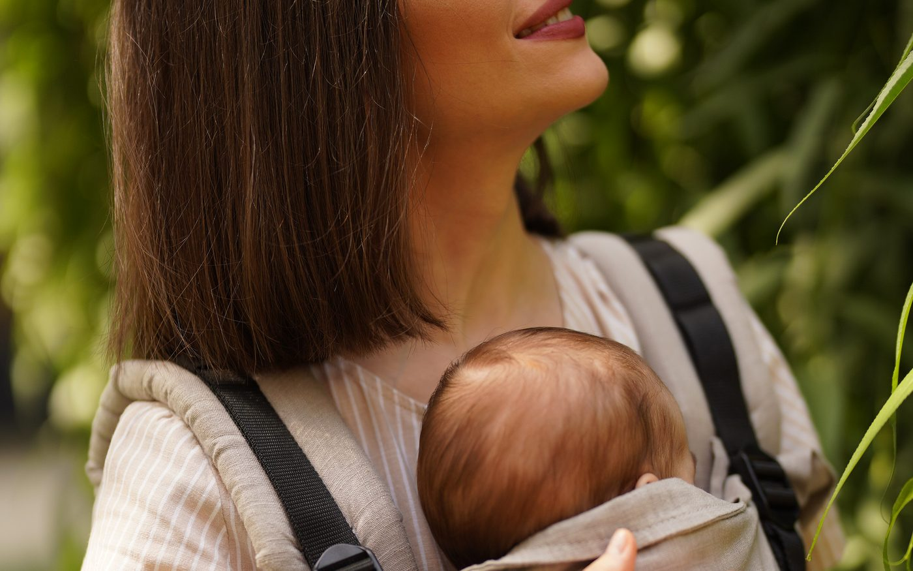
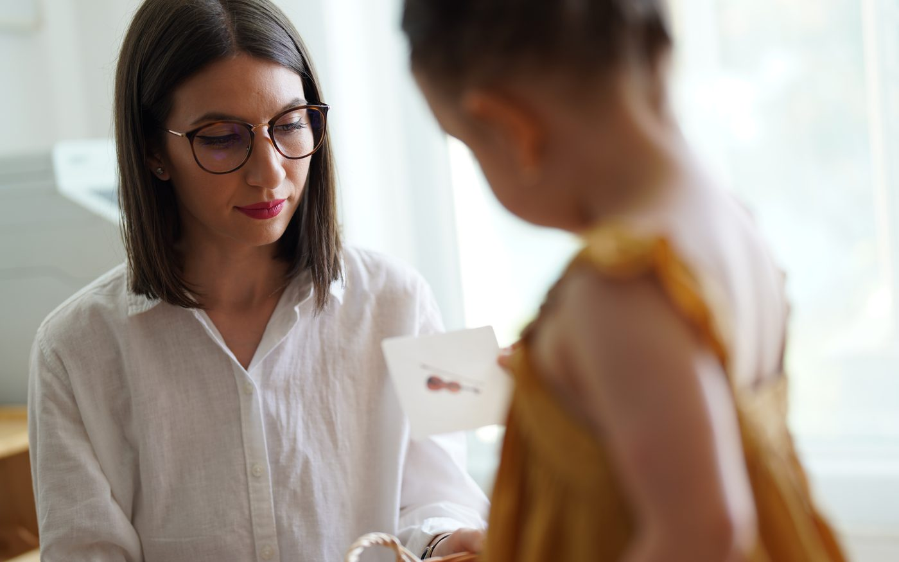
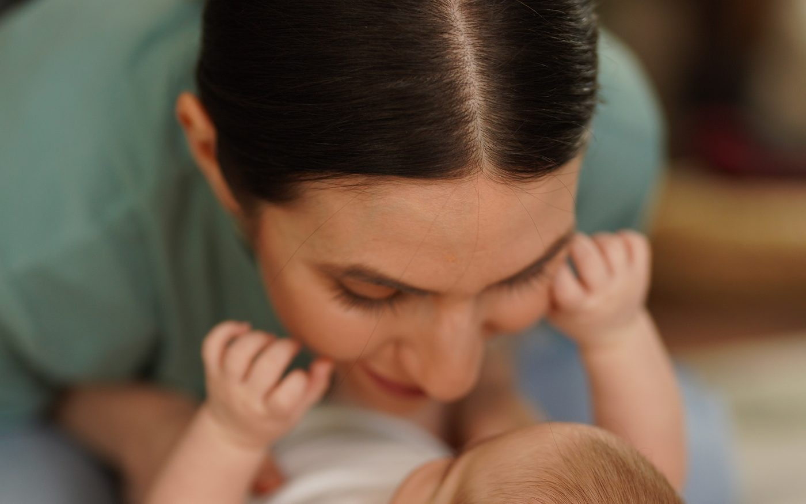

Un adult de încredere.
Atât.
Te însoțesc în relația cu copilul tău — fără judecată, fără grăbire, fără rețete standardizate. Doar prezență reală, bazată pe știință și pe 10 ani de mentorat.

Lucrez cu părintele înainte de copil.
Pentru că un copil are nevoie de un adult prezent — nu de un părinte perfect. Te ajut să devii „suficient de bun". Am spus suficient de bun, nu perfect.
Despre mine →Cursuri pentru părinți conștienți
Fiecare program e o conversație de profunzime — nu o listă de tehnici. Construite pe atașament, neuroștiință și pedagogie Montessori AMI.

Adaptarea la creșă, fără traumă
Cum însoțești copilul prin separare cu siguranță emoțională, nu cu plâns prelungit.

Montessori acasă — primii pași
Cum pregătești un mediu care urmează copilul. Rafturi, materiale, rutine zilnice.

Primii ani — fundația atașamentului
Ce înseamnă cu adevărat un atașament sigur, în primele 1000 de zile.
„Copiii Montessori au părinți Montessori."
— Maria Montessori
Sunt Gabriela.
Specialist în dezvoltarea copilului, certificare Montessori AMI, 10+ ani lângă peste 10.000 de părinți și fondatoarea spațiului Child's Nest.
Lucrez cu părinți care vor o relație autentică cu copiii lor — nu soluții rapide. Cu părinți care înțeleg că un copil are nevoie de un adult care îl însoțește, nu de unul care îl conduce.
Voci din comunitate
„Cursul m-a ajutat să-mi văd copilul cu alți ochi. Nu mai încerc să-l corectez — îl însoțesc."
„Gabriela vorbește din experiență, nu din manual. Simți că e acolo cu tine, nu deasupra ta."
„Pentru prima dată, cineva îmi spune că e ok să fiu „doar" suficient de bună. Asta a schimbat tot."
Un email cald, săptămânal.
Idei, ghiduri și povești despre cum să fii părintele de care copilul tău are nevoie. Fără spam, fără urgențe artificiale.
Te poți dezabona oricând. #suntaici